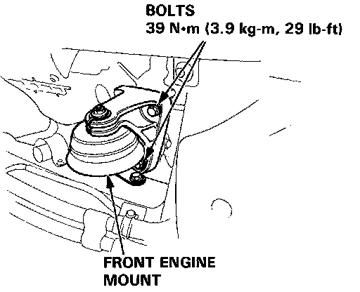
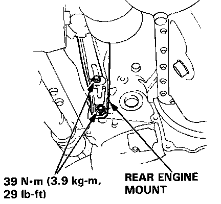
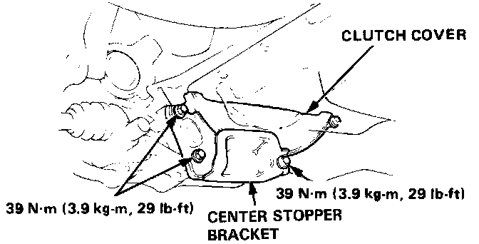

Installation
Transmission Installation
1. Place the transmission on transmission jack.
NOTE: Clean and grease release bearing sliding surfaces.
2. Check that the two dowel pins are installed in the clutch housing.
3. Raise the transmission far enough to align dowel pins with matching holes in the block.
4. Roll the transmission toward the engine and fit the mainshaft into the clutch disc splines.
5. Install the transmission mount bolts and torque to 75 N.m (7.5 kg-m, 55 lb-ft).
6. Install the starter mount bolts and tighten to the specified torque.

7. Install the front engine mount bolts and torque to 39 N.m (3.9 kg-m, 29 lb-ft).

8. Install the rear engine mount bolts and tighten to 39 N.m (3.9 kg-m, 29 lb-ft) torque.
9. Install the center stopper bracket bolts and tighten to 39 N.m (3.9 kg-m, 29 lb-ft).

10. Install the clutch cover.
11. Install the center beam.
12. Remove the transmission jack.

13. Install and tighten the new torque rod bracket bolts to 39 N.m (3.9 kg-m, 29 lb-ft).
15. Install the shift rod and shift extension.

16. Install the intermediate shaft with the three 8 x 1.25 mm bolts and a 10 x 1.25 mm bolt. Tighten 8 mm bolts to 22 N.m (2.2 kg-m, 16 lb-ft) and 10 mm bolt to 39 N.m (3.9 kg-m, 29 lb-ft).
17. Install the right and left axles.
18. Install the speed sensor.

19. Install the clutch slave cylinder with the two 8 x 1.25 mm bolts complete with the pipe and push rod. Torque the bolts to 22 N.m (2.2 kg-m, 16 lb-ft).
20. Install the clutch damper assembly and 8 x 1.25 mm bolts to transmission hanger bracket. Torque the bolts to 22 N.m 12.2 kg-m, 16lb-ft).
21. Install the air cleaner case and intake hose.
22. Install and tighten the two 6 x 1.0 mm bolts at side of the battery case, and tighten the intake hose band.
23. Tighten the 6 x 1.0 mm harness holder bolt at the side of the transmission hanger.
24. Connect the backup light switch wire to the engine.
25. Connect the starter and ground cables.
26. Connect the battery positive (+) and negative (-) cables to the battery.
27. Refill the transmission and adjust clutch free play.
28. Check the transmission for smooth operation.